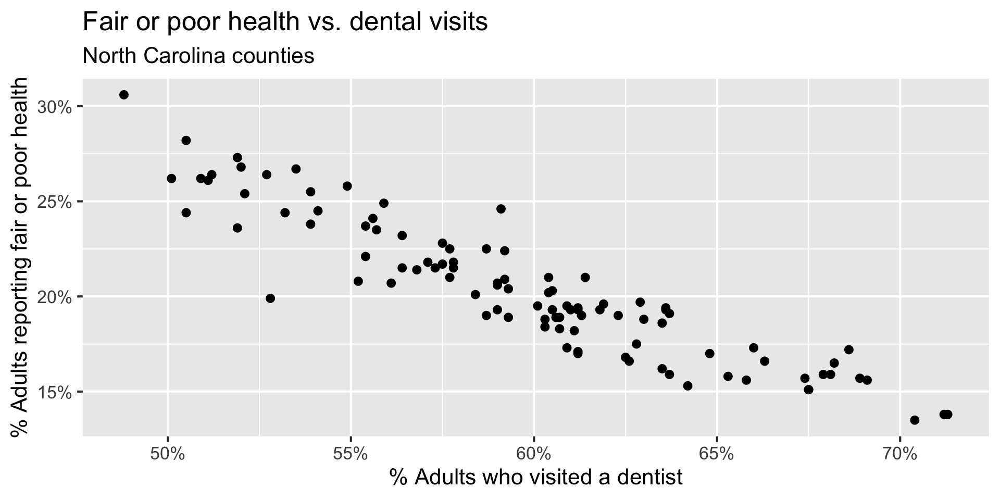
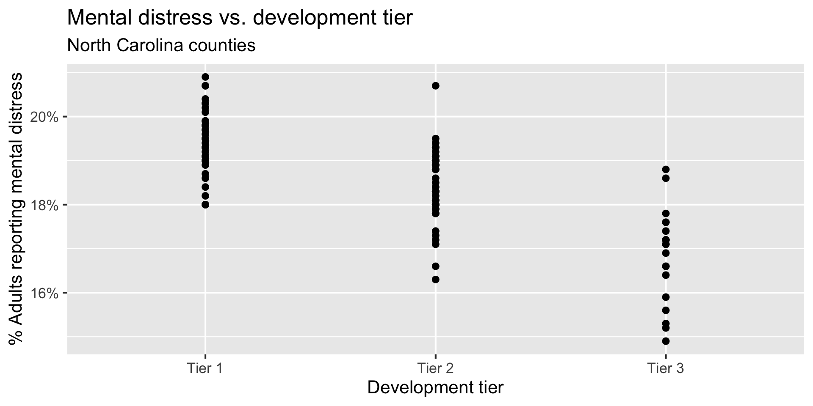
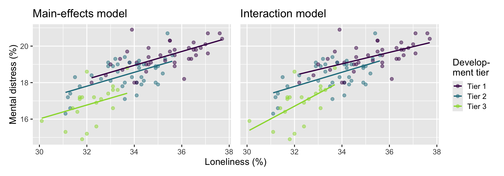
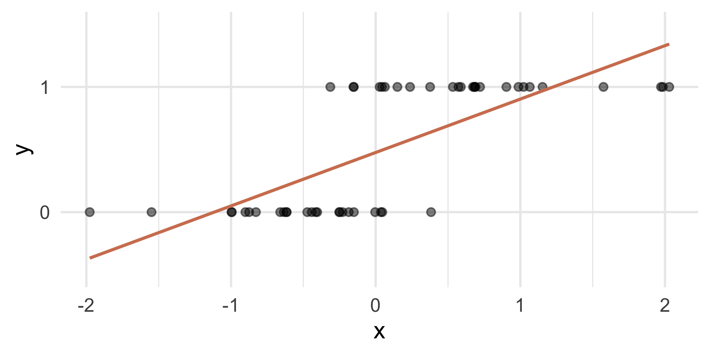
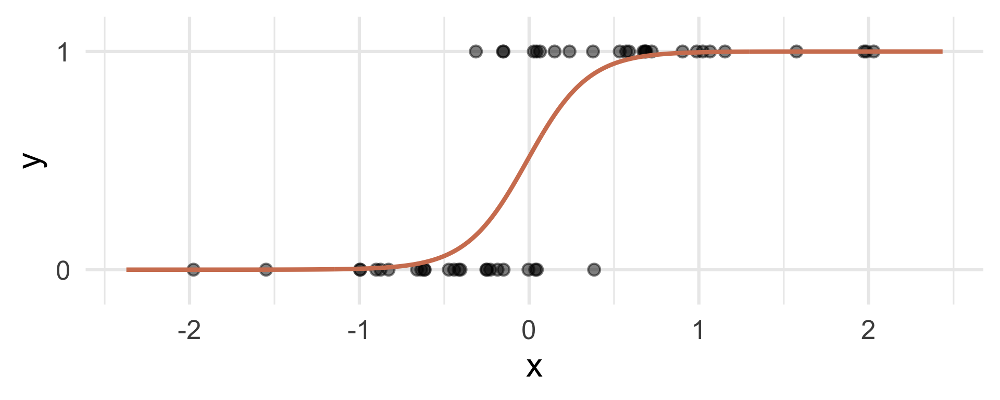
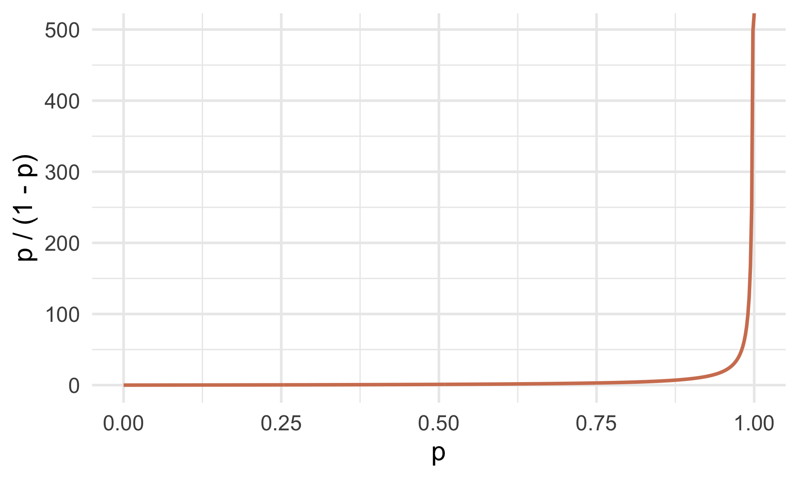
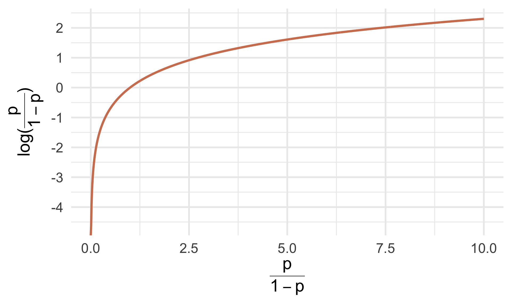
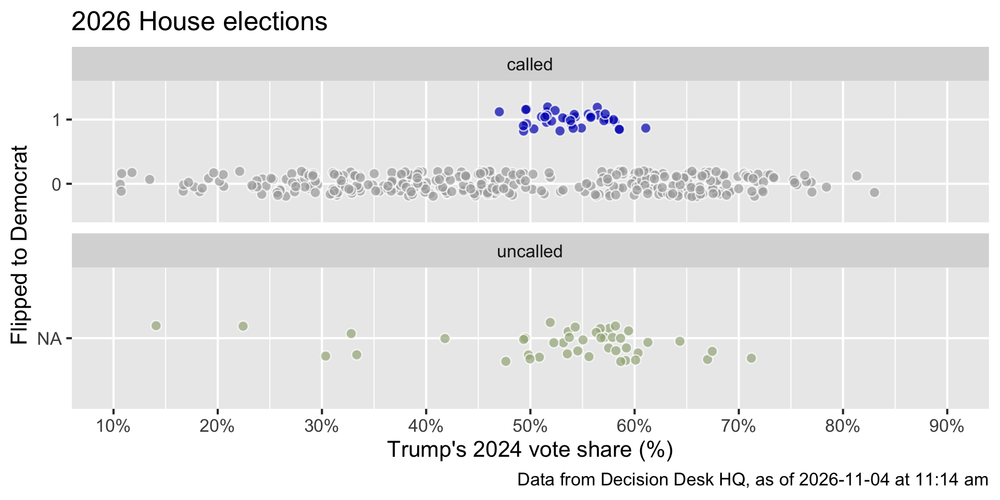

Logistic regression
Lecture 19
Duke University
STA 199 - Fall 2026
November 4, 2026
Warm-up
Announcement: House course in Statistical Science
Register for a fun House Course to learn more about statistics and research! No experience required.
Statistical Methods in Research
Spring 2027 House Course (0.5 credit, S/U)
Instructors: Liane Ma (lm487@duke.edu), Cooper Ruffing (ctr22@duke.edu)
Faculty Sponsor: Dr. John Zito
Time/Location: Mondays 7:00-8:30 PM, Old Chemistry 123
Course Code: HOUSECS 59 - 28
In this course, students will explore the statistical fundamentals necessary for understanding and conducting research in a variety of fields. Students will engage with real-world research papers and datasets across disciplines, exploring how statistics are used (and sometimes misused) in published work. Instead of focusing solely on technical skills, this course emphasizes interpretation, critique, and application of basic statistical tools in research. From misused methods to research bias, Statistical Methods in Research aims to provide students with a deeper understanding of when, why, and how to best utilize statistical methods in their future storytelling. The course culminates in student-led discussion, applying concepts from class. No previous experience is required in statistical science or research.
Project: Technical writing with Quarto
Your project write-up with Quarto
Building your project website with Quarto
The
docsfolder.Making sure your website reflects your latest changes.
Customizing the look of your website.
- Quarto themes: Learn more at https://quarto.org/docs/output-formats/html-themes.html. [example]
- For the adventurous: Customizing your website with
_brand.yml, learn more at https://quarto.org/docs/authoring/brand.html.
Slides
- Option 1: Make your slides not in Quarto but make sure they’re available in your Quarto project website.
Important
Make sure the presentation is called presentation.pdf.
- Option 2: Make your slides with Quarto.
Project: Code smell and style
Code smell
One way to look at smells is with respect to principles and quality: “Smells are certain structures in the code that indicate violation of fundamental design principles and negatively impact design quality”. Code smells are usually not bugs; they are not technically incorrect and do not prevent the program from functioning. Instead, they indicate weaknesses in design that may slow down development or increase the risk of bugs or failures in the future.
Code style
Follow the Tidyverse style guide:
Spaces before and line breaks after each
+when building a ggplotSpaces before and line breaks after each
|>in a data transformation pipeline,Proper indentation
Spaces around
=signs and spaces after commasLines should not span more than 80 characters, long lines should be broken up with each argument on its own line
Logistic regression
Packages
Thus far…
We have been studying regression:
What combinations of data types have we seen?
What did the picture look like?
Recap: Simple linear regression
Numerical outcome and one numerical predictor:

Recap: Simple linear regression
Numerical outcome and one categorical predictor (two levels):

Recap: Multiple linear regression
Numerical outcome, numerical and categorical predictors:

Today: a binary outcome
\[ y = \begin{cases} 1 & &&\text{eg. Yes, Win, True, Heads, Success}\\ 0 & &&\text{eg. No, Lose, False, Tails, Failure}. \end{cases} \]

Who cares?
If we can model the relationship between predictors (\(x\)) and a binary outcome (\(y\)), we can use the model to do a special kind of prediction called classification.
Example: Is the e-mail spam or not?
\[ \mathbf{x}: \text{word and character counts in an e-mail.} \]

\[ y = \begin{cases} 1 & \text{it's spam}\\ 0 & \text{it's legit} \end{cases} \]
Example: Is it cancer or not?
\[ \mathbf{x}: \text{features in a medical image.} \]

\[ y = \begin{cases} 1 & \text{it's cancer}\\ 0 & \text{it's healthy} \end{cases} \]
Example: Will they default?
\[ \mathbf{x}: \text{financial and demographic info about a loan applicant.} \]

\[ y = \begin{cases} 1 & \text{applicant is at risk of defaulting on loan}\\ 0 & \text{applicant is safe} \end{cases} \]
Example: Did the House seat flip to Democrat or not?
\[ \mathbf{x}: \text{Trump's 2024 vote share in the congressional district.} \]

\[ y = \begin{cases} 1 & \text{the seat flipped to Democrat from 2024 to 2026}\\ 0 & \text{it didn't} \end{cases} \]
How do we model this type of data?

Straight line of best fit is a little silly

Instead: S-curve of best fit
Instead of modeling \(y\) directly, we model the probability that \(y=1\):

- “Given new email, what’s the probability that it’s spam?”
- “Given new image, what’s the probability that it’s cancer?’’
- “Given new loan application, what’s the probability that they default?’’
- “Given an uncalled House seat, what’s the probability that it flips to Democrat?’’
Why don’t we model y directly?
Recall regression with a numerical outcome: Our models do not output guarantees for \(y\), they output predictions that describe behavior on average
Similar when modeling a binary outcome: Our models cannot directly guarantee that \(y\) will be zero or one. The correct analog to “on average” for a 0/1 outcome is “what’s the probability?”
So, what is this S-curve, anyway?
It’s the logistic function:
\[ \text{Prob}(y = 1) = \frac{e^{\beta_0+\beta_1x}}{1+e^{\beta_0+\beta_1x}}. \]
If you set \(p = \text{Prob}(y = 1)\) and do some algebra, you get the simple linear model for the log-odds:
\[ \log\left(\frac{p}{1-p}\right) = \beta_0+\beta_1x. \]
This is called the logistic regression model.
Log-odds?
\(p = \text{Prob}(y = 1)\) is a probability. A number between 0 and 1
\(p / (1 - p)\) is the odds. A number between 0 and \(\infty\)
“The odds of this lecture going well are 10 to 1.”
- The log odds \(\log(p / (1 - p))\) is a number between \(-\infty\) and \(\infty\), which is suitable for the linear model.
Probability to odds

Odds to log odds

Participate 📱💻
If \(p\) is the probability of success, what is the following called:
\[ \frac{p}{1-p} \]
- Probability of failure
- Odds of failure
- Odds of success
- Log-odds of success

Go to wooclap.com and use the code TCGEJHI.
Logistic regression
\[ \log\left(\frac{p}{1-p}\right) = \beta_0+\beta_1x. \]
The logit function \(\log(p / (1-p))\) is an example of a link function that transforms the linear model to have an appropriate range
This is an example of a generalized linear model
Estimation
We estimate the parameters \(\beta_0\) (intercept) and \(\beta_1\) (slope) using maximum likelihood (don’t worry about it) to get the “best fitting” S-curve
The fitted model is
\[ \log\left(\frac{\widehat{p}}{1-\widehat{p}}\right) = b_0+b_1x. \]
Dem flips
Today’s data
2026 House results and projections from Decision Desk HQ (as of 2026-11-04, 11:14 am), merged with 2024 results (from the gerrymander dataset we worked with earlier in the semester):
Rows: 443
Columns: 18
$ district <chr> "AK-00", "AL-01", "AL-02", "AL-03", "AL-04", "AL-05", "…
$ state_abb <chr> "AK", "AL", "AL", "AL", "AL", "AL", "AL", "AL", "AR", "…
$ state <chr> "Alaska", "Alabama", "Alabama", "Alabama", "Alabama", "…
$ house_rep_20 <chr> "Don Young", "Jerry Carl", "Barry Moore", "Mike Rogers"…
$ house_party_20 <chr> "Republican", "Republican", "Republican", "Republican",…
$ house_rep_22 <chr> "Mary Sattler Peltola", "Jerry L Carl", "Barry Moore", …
$ house_party_22 <chr> "Democrat", "Republican", "Republican", "Republican", "…
$ house_rep_24 <chr> "Nick Begich", "Barry Moore", "Shomari Figures", "Mike …
$ house_party_24 <chr> "Republican", "Republican", "Democrat", "Republican", "…
$ harris_24 <dbl> 41.41, 21.89, 53.52, 26.18, 15.96, 34.20, 29.68, 61.45,…
$ trump_24 <dbl> 54.54, 76.94, 45.31, 72.71, 83.02, 64.02, 68.47, 37.50,…
$ gerry_22 <chr> NA, "F", "F", "F", "F", "F", "F", "F", "C", "C", "C", "…
$ gerry_24 <chr> NA, "B", "B", "B", "B", "B", "B", "B", "C", "C", "C", "…
$ gerry_26 <chr> NA, "B", "B", "B", "B", "B", "B", "B", "C", "C", "C", "…
$ rating_26 <chr> "Lean R", "Safe R", "Lean R", "Safe R", "Safe R", "Safe…
$ leader_26 <chr> "Republican", "Republican", "Democrat", "Republican", "…
$ margin_26 <dbl> 9.00, 18.00, 8.00, 28.00, 50.00, 7.00, 15.00, 39.00, 35…
$ called_26 <chr> "uncalled", "called", "called", "called", "called", "ca…What’s a Dem flip?
A seat flips to Democrat if it was held by a Republican after 2024 and a Democrat leads in 2026:
midterm_26 <- midterm_26_raw |>
mutate(
flip_dem_24_26 = case_when(
called_26 == "uncalled" ~ NA,
called_26 == "called" & house_party_24 == "Republican" & leader_26 == "Democrat" ~ "1",
called_26 == "called" & house_party_24 == "Republican" & leader_26 == "Republican" ~ "0",
called_26 == "called" & house_party_24 == "Democrat" ~ "0",
),
flip_dem_24_26 = as.factor(flip_dem_24_26)
) |>
filter(!is.na(called_26))Data summary based on called/uncalled
As of 11:14 am today by Decision Desk HQ:
Code
house_party_24 leader_26 flip_dem_24_26 called uncalled Total
Democrat Democrat 0 201 0 201
Democrat Republican 0 2 0 2
Democrat <NA> 0 3 0 3
Republican Democrat 1 38 0 38
Republican Republican 0 147 0 147
Democrat Democrat <NA> 0 8 8
Democrat Republican <NA> 0 1 1
Republican Democrat <NA> 0 12 12
Republican Republican <NA> 0 23 23
Total - - 391 44 435Visualizing the data
Code
ggplot(
midterm_26,
aes(x = trump_24, y = flip_dem_24_26, fill = flip_dem_24_26)
) +
geom_jitter(
shape = "circle filled",
height = 0.2,
alpha = 0.7,
size = 3,
show.legend = FALSE,
color = "white"
) +
scale_fill_manual(
values = c("0" = "darkgray", "1" = "#0015BC"),
na.value = "#A3B18A"
) +
scale_x_continuous(
limits = c(10, 90),
breaks = seq(0, 100, 10),
labels = label_percent(scale = 1)
) +
labs(
x = "Trump's 2024 vote share (%)",
y = "Flipped to Democrat",
title = "2026 House elections",
caption = "Data from Decision Desk HQ, as of 2026-11-04 at 11:14 am"
) +
facet_wrap(~called_26, nrow = 2, scales = "free_y")
Goal: Predict whether a seat flips to Democrat based on Trump’s 2024 vote share for uncalled seats, using data from called seats.
The data
# A tibble: 391 × 6
district house_party_24 called_26 leader_26 flip_dem_24_26 trump_24
<chr> <chr> <chr> <chr> <fct> <dbl>
1 AL-01 Republican called Republican 0 76.9
2 AL-02 Democrat called Democrat 0 45.3
3 AL-03 Republican called Republican 0 72.7
4 AL-04 Republican called Republican 0 83.0
5 AL-05 Republican called Republican 0 64.0
6 AL-06 Republican called Republican 0 68.5
7 AL-07 Democrat called Democrat 0 37.5
8 AR-01 Republican called Republican 0 71.7
9 AR-02 Republican called Republican 0 56.6
10 AR-03 Republican called Republican 0 61.1
# ℹ 381 more rowsFitting a logistic model
# A tibble: 2 × 5
term estimate std.error statistic p.value
<chr> <dbl> <dbl> <dbl> <dbl>
1 (Intercept) -3.48 0.648 -5.37 0.0000000805
2 trump_24 0.0244 0.0117 2.08 0.0372 Fitted equation for the log-odds:
\[ \log\left(\frac{\hat{p}}{1-\hat{p}}\right) = -3.48 + 0.0244\times trump\_24 \]
Interpreting the intercept
If trump_24 = 0, then
\[ \hat{p}=\widehat{P(y=1)}=\frac{e^{-3.48}}{1+e^{-3.48}}\approx 0.03. \]
So, a seat where Trump got 0% of the vote in 2024 is predicted to have a 3% chance of flipping to Democrat.
But Trump’s vote share in called seats ranges from 10.6% to 83%, so this is an extrapolation and not meaningful.
Interpreting the slope is tricky
Recall:
\[ \frac{\widehat{p}}{1-\widehat{p}} = e^{b_0}e^{b_1x} \]
A one unit increase in \(x\) is associated with a change in odds by a factor of \(e^{b_1}\).
Back to the example…
\[ \log\left(\frac{\hat{p}}{1-\hat{p}}\right) = -3.48 + 0.0244\times trump\_24 \]
Seats where Trump’s 2024 vote share was one percentage point higher are predicted to have odds of flipping to Democrat that are higher by a factor of \(e^{0.0244}\approx 1.02\), on average.
Note
Higher Trump vote share, more likely to flip to Democrat?! 🤔 Hold that thought…
Classification
(prediction by another name…)
Predict
How well did our model do for predicting already called house seats?
# A tibble: 2 × 3
flip_dem_24_26 .pred_class n
<fct> <fct> <int>
1 0 0 353
2 1 0 38Terrible!
Is that surprising?
Predict for uncalled seats
# A tibble: 44 × 7
district trump_24 house_party_24 .pred_class .pred_0 .pred_1 leader_26
<chr> <dbl> <chr> <fct> <dbl> <dbl> <chr>
1 AK-00 54.5 Republican 0 0.895 0.105 Republican
2 AZ-01 50.9 Republican 0 0.903 0.0967 Democrat
3 AZ-02 56.9 Republican 0 0.890 0.110 Democrat
4 AZ-05 59.2 Republican 0 0.884 0.116 Republican
5 AZ-08 57.5 Republican 0 0.888 0.112 Republican
6 CA-04 32.8 Democrat 0 0.936 0.0645 Democrat
7 CA-05 57.6 Republican 0 0.888 0.112 Republican
8 CA-07 33.4 Democrat 0 0.935 0.0652 Democrat
9 CA-11 14.1 Democrat 0 0.958 0.0418 Democrat
10 CA-14 30.4 Democrat 0 0.939 0.0609 Democrat
11 CA-23 57.1 Republican 0 0.889 0.111 Republican
12 CA-34 22.4 Democrat 0 0.949 0.0508 Democrat
13 CA-40 49.5 Republican 0 0.906 0.0938 Republican
14 CO-03 53.6 Republican 0 0.897 0.103 Republican
15 CO-04 57.9 Republican 0 0.887 0.113 Democrat
16 CO-05 53.2 Republican 0 0.898 0.102 Democrat
17 FL-07 55.6 Republican 0 0.893 0.107 Republican
18 FL-09 47.6 Democrat 0 0.910 0.0900 Democrat
19 FL-26 67.0 Republican 0 0.863 0.137 Republican
20 FL-27 56.7 Republican 0 0.890 0.110 Republican
21 LA-05 67.4 Republican 0 0.862 0.138 Democrat
22 LA-06 41.8 Democrat 0 0.921 0.0790 Democrat
23 ME-02 53.8 Democrat 0 0.897 0.103 Republican
24 MI-04 51.9 Republican 0 0.901 0.0989 Democrat
25 MI-07 49.8 Republican 0 0.906 0.0945 Democrat
26 MI-10 52.2 Republican 0 0.900 0.0996 Democrat
27 MN-01 55.1 Republican 0 0.894 0.106 Democrat
28 NC-03 60.3 Republican 0 0.881 0.119 Republican
29 NC-05 58.2 Republican 0 0.886 0.114 Democrat
30 NC-07 56.3 Republican 0 0.891 0.109 Republican
31 NC-08 59.1 Republican 0 0.884 0.116 Republican
32 NC-10 58.2 Republican 0 0.887 0.113 Republican
33 NY-01 54.3 Republican 0 0.896 0.104 Republican
34 NY-02 56.8 Republican 0 0.890 0.110 Republican
35 NY-17 49.4 Republican 0 0.907 0.0935 Democrat
36 NY-21 60.1 Republican 0 0.882 0.118 Republican
37 TN-04 71.2 Republican 0 0.851 0.149 Democrat
38 TX-02 61.3 Republican 0 0.879 0.121 Republican
39 TX-22 58.7 Republican 0 0.885 0.115 Republican
40 TX-27 64.4 Republican 0 0.871 0.129 Republican
41 TX-38 59.4 Republican 0 0.883 0.117 Republican
42 WA-03 50.0 Democrat 0 0.905 0.0947 Democrat
43 WA-04 58.7 Republican 0 0.885 0.115 Republican
44 WA-05 53.6 Republican 0 0.897 0.103 Republican